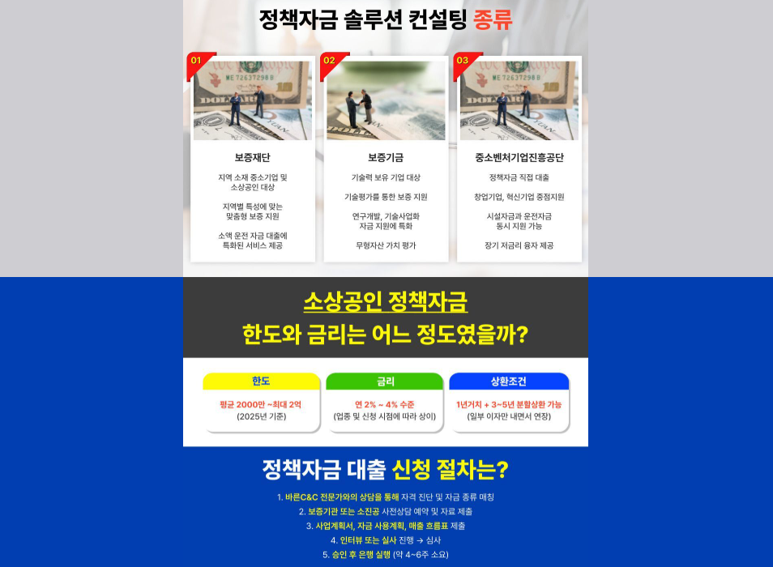
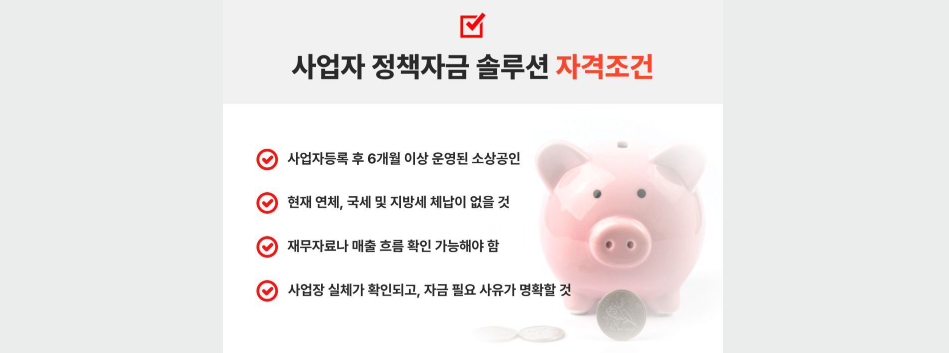

부채 통합 지원센터 관련 정보를 찾고 있다면 먼저 현재 자신이 이용하고 있는 금융상품을 정확하게 파악하는 것이 중요합니다. 여러 금융채무를 하나로 관리하는 방법을 알아보더라도 반드시 기존보다 유리한 조건이 적용되는 것은 아니므로 금리와 총 상환금액, 이용 기간과 추가 비용을 함께 비교해야 합니다.
현재 이용 중인 부채부터 정확하게 정리해보세요
여러 금융상품을 동시에 이용하고 있다면 각각의 남은 원금과 적용 금리, 월 상환금액, 남은 상환 기간을 먼저 정리해보는 것이 좋습니다.
현재 상황을 정확히 파악해야 어떤 부분에서 금융비용이 많이 발생하고 있는지 확인할 수 있으며, 새로운 금융상품이나 관리 방법을 검토할 때도 기존 조건과 보다 정확하게 비교할 수 있습니다.

월 상환금액뿐 아니라 전체 금융비용을 확인하세요
부채 관리 방법을 비교할 때 월 납입금액이 줄어드는지만 확인하는 것은 충분하지 않을 수 있습니다. 상환 기간이 길어지면 매월 부담은 낮아지더라도 전체적으로 부담하는 이자 비용이 증가할 가능성이 있기 때문입니다.
따라서 새로운 금융상품을 이용하거나 기존 채무 구조를 변경하려면 적용 금리와 월 상환액뿐 아니라 총 상환금액과 전체 이용 기간까지 함께 비교하는 것이 중요합니다.

현재 금리
이용 중인 각 금융상품의 실제 적용 금리를 확인해보세요.
월 상환금액
매월 소득에서 상환금액이 차지하는 비중을 점검해보세요.
총 상환금액
단순한 월 납입액이 아닌 전체 금융비용을 함께 확인하세요.
상환 기간
이용 기간이 길어질 경우 발생할 수 있는 비용도 살펴보세요.
새로운 조건이 실제로 유리한지 꼼꼼하게 비교하세요
여러 부채를 관리하기 위해 새로운 금융상품을 검토하는 경우에는 단순히 하나로 관리할 수 있다는 점만 보고 결정하기보다 기존 금융상품과 새로운 조건을 직접 비교해야 합니다.
새로운 대출을 이용해 기존 채무를 상환하는 방식이라면 추가적인 대출 계약이 발생하는 것이므로 실제 금리와 한도, 상환 기간 및 비용을 충분히 확인해야 합니다.
상담 신청 전 제공기관과 실제 조건을 확인하세요
부채 관리와 관련된 상담을 신청할 때는 어떤 기관에서 실제 서비스를 제공하는지 확인하고, 금융상품을 안내받는 경우 계약 상대방과 세부 조건을 살펴봐야 합니다.
상담을 신청했다는 이유만으로 특정 금융상품을 반드시 이용할 필요는 없습니다. 제안받은 내용이 자신의 현재 조건보다 실제로 유리한지 비교하고 충분히 이해한 뒤 결정하는 것이 중요합니다.